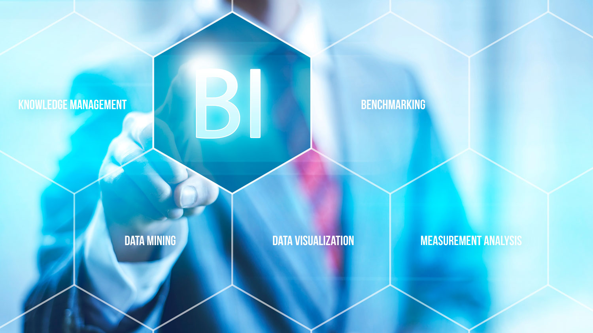
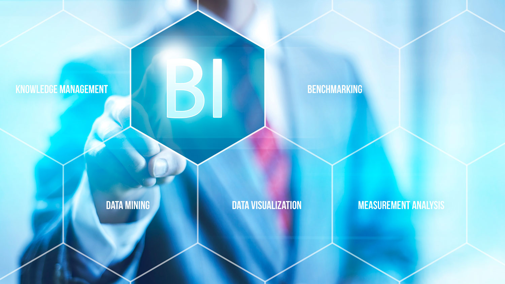

Business Intelligence
The business world is based on strategic decision making. What makes the difference between a successful
company and another that does not, is the correct and timely decision making. To be able to do this in
the best way, it is essential to have the adequate information and in time that supports all the
management of the company's operations in an agile and fast way.
Business intelligence (BI) is the set of processes, applications and technologies that facilitate the quick and easy obtaining of data from business management systems for analysis and interpretation, so that they can be used for data collection. decisions and become knowledge for those responsible for the business.
It consists of a set of business management techniques that allow an organization to make business decisions based on data, which have been treated by different tools to convert them into information.
Therefore in terms of their differences: while Big Data focuses on the capture, storage and processing of data, Business Intelligence focuses on the analysis processes of such data to convert it into information and make the appropriate business decisions.

Business intelligence (BI) is the set of processes, applications and technologies that facilitate the quick and easy obtaining of data from business management systems for analysis and interpretation, so that they can be used for data collection. decisions and become knowledge for those responsible for the business.
It consists of a set of business management techniques that allow an organization to make business decisions based on data, which have been treated by different tools to convert them into information.
Therefore in terms of their differences: while Big Data focuses on the capture, storage and processing of data, Business Intelligence focuses on the analysis processes of such data to convert it into information and make the appropriate business decisions.
